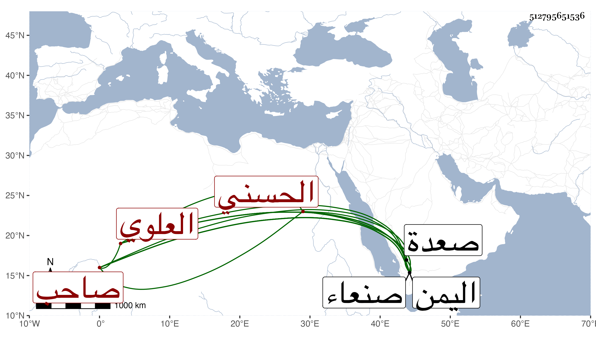

0902Sakhawi.DawLamic.ITO20230111-ara1.EIS1600.512795651536
Biography ID: 512795651536
1071
علي بن محمد بن علي بن محمد بن علي بن منصور بن حجاج بن يوسف نجاح الدين أبو الحسن بن الإمام صلاح الدين أبي عبد الله الحسني العلوي صاحب صنعاء اليمن وابن صاحبها ووالد الناصر محمد الآتي ويلقب بالمنصور ملكها بعد أبيه في حدود سنة أربع وتسعين وسبعمائة بعهد منه وطالت أيامه وعظم شأنه وأضاف إلى صنعاء صعدة بعد محاصرته لملكها عدة حصون للإسماعيلية أخذها من أربابها عنوة وصفت له تلك الممالك حتى مات بصنعاء في سابع عشري صفر سنة أربعين .
